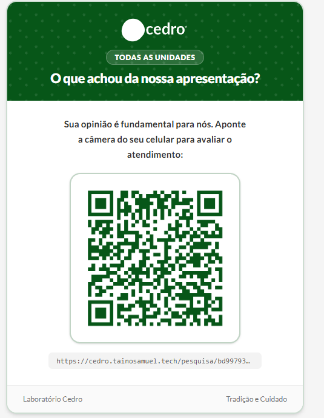

Núcleo de Inovação e Tecnologia (NIT) × UNDB
Plataforma de Experiência do Cliente & Ouvidoria
Evolução do acompanhamento de satisfação e gestão automatizada de manifestações, da concepção à operação em produção na VPS.
CX
O que vamos apresentar hoje
O que é o Projeto & De Onde Foi Baseado
Substituição do fluxo legado INDECX por uma solução própria com rastreabilidade de SLA.
Documentações & Engenharia
6 especificações técnicas oficiais, diagramas UML, contrato de API e 71 testes.
Stack Tecnológica
Next.js 16, Node.js 22 + Express POO e PostgreSQL / Supabase Self-Hosted.
Hospedagem em Produção (VPS)
Infraestrutura em VPS Linux gerenciada pelo Coolify v4 com SSL automático.
Entregas Concluídas & Próximos Passos
Telas em operação, unidades Cohama/Renascença configuradas e módulo final.
Do legado INDECX para uma plataforma própria e rastreável
Referência: Documentação INDECX
Analisamos integralmente a Documentacao_Funcional_INDECX.pdf para mapear o processo real de pesquisas de satisfação e ouvidoria do laboratório.
- ✕ Ausência de controle automático de prazos (SLA) por gravidade da nota.
- ✕ Dependência de triagem manual para identificar pacientes detratores.
- ✕ Pouca visibilidade gerencial e histórico fragmentado entre ouvidoria e unidades.
Plataforma Própria Sob Medida
Sistema web completo focado na jornada do paciente e fechamento do ciclo entre recepção, ouvidoria e coordenação de unidade.
- ✓ Coleta sem atrito: QR Code impresso, Totem ou Link direto sem login para o paciente.
- ✓ Abertura automática: notas 1 e 2 geram manifestação crítica com SLA calculado na hora.
- ✓ Auditoria imutável: linha do tempo completa de encaminhamentos, respostas e escalonamentos.
Números do projeto até este checkpoint
Testes automatizados passando
Regras de domínio, cálculo de SLA, transições de status e casos de uso validados com 14 suítes no Vitest antes de chegar à produção.
Rotas em Produção
Fluxo público do paciente, autenticação, dashboard, pesquisas, manifestações, pendências, unidades e usuários.
Documentos Oficiais
Arquitetura, modelagem POO, banco relacional, contrato da API, diagramas UML e guia de deploy.
Perfis com RBAC
Controle de acesso por perfil: Administrador, Ouvidoria e Coordenador de Unidade.
Unidades Ativas
Base limpa e configurada para operação real das unidades Cedro Cohama e Cedro Renascença.
Documentações técnicas produzidas em /docs
Cada módulo foi especificado antes de ser codificado.
Toda a arquitetura, regras de negócio, tabelas SQL e infraestrutura de servidor estão documentadas no repositório para facilitar manutenção futura pela equipe do NIT.
Bônus Acadêmico & Técnico
Inclui também planos de implementação em docs/superpowers/plans, diagramas SVG UML e scripts SQL de criação e limpeza.
Arquitetura e Papéis
Estrutura de pastas, isolamento entre front/back/banco e permissões por perfil.
Modelagem POO & Domínio
Entidades ricas, máquina de estados da manifestação, enums e políticas de SLA.
Modelagem de Banco de Dados
DER relacional, schema.sql, seed.sql e limpeza-e-seed.sql.
Contrato da API & Plano QA
Endpoints REST, DTOs, códigos HTTP esperados e matriz de validação de testes.
Diagramas UML & Casos de Uso
Atores, fluxos de avaliação e tratativa, acompanhados de diagrama UML vetorial.
Guia de Deploy VPS + Coolify
Passo a passo de produção, DNS, Dockerfiles, variáveis de build e troubleshooting.
Arquitetura moderna em camadas desacopladas
Front-end Web
- Next.js 16 (App Router + Turbopack)
- React 19 + TypeScript
- Tailwind CSS v4 + Design System Cedro
- Output Standalone em Docker leve
Back-end POO
- Node.js 22 LTS + Express.js
- TypeScript estrito em Clean Architecture
- JWT + Bcrypt para autenticação e RBAC
- Vitest + Supertest (71 testes unitários)
Persistência
- PostgreSQL relacional com UUIDs
- Supabase Self-Hosted (Kong + Studio)
- pgcrypto para senhas com hash Blowfish
- Constraints & ENUMs no banco
Hospedado em VPS própria com Coolify v4 e HTTPS automático
VPS Linux + Coolify v4.7.5
Contêineres Docker isolados por serviço, com proxy reverso Traefik e emissão automática de certificados SSL Let's Encrypt.
-
Front-end
cedro.tainosamuel.tech -
API Back-end
api.cedro.tainosamuel.tech -
Health Check
/api/health → 200 OK
Webhooks conectados ao branch prod do GitHub: cada atualização gera novo build automaticamente.
Fluxo completo já entregue e validado

Avaliação Mobile-First
Escala intuitiva de 1 a 5 com abertura automática de chamado crítico para notas 1 e 2.

Display QR Code em PDF
Geração de placa A4 com identidade visual Cedro, título, unidade vinculada e QR Code pronto para recepção.

Painel Gerencial & SLA
Indicadores de NPS/CSAT, fila de pendências, tratativa por unidade e gestão de usuários.
O que já entregamos e o que falta para fechar o MVP
Concluído até agora
~90% do MVPPróximas Etapas
Reta Final-
1
Módulo de Relatórios (
/relatorios) Filtros por período/unidade e exportação gerencial para diretoria. -
2
Notificações SMTP & Alertas de SLA Disparo real de e-mails (via
INotificadorjá plugado) e alerta automático de prazos vencidos. -
3
Homologação com a Equipe Cedro Validação prática com coordenadores da Cohama e Renascença + Ouvidoria.
-
4
Ajustes Finos & Go-Live Refinamentos pós-feedback e entrega dos totens impressos nas recepções.
Pronto para validação com a equipe do Cedro.
Código estruturado, testes automatizados, documentação completa e servidor em produção aguardando o feedback operacional de vocês.